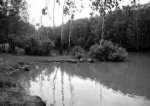
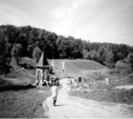
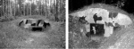
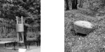
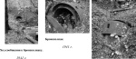

Страницы авторов "Тёмного леса"
Литературный Кисловодск и окрестности
Пишите нам! temnyjles@narod.ru
|  | Речка Очаковка |
Обширный лесной массив в самой возвышенной части Москвы - довольно известный памятник природы. Но кроме редких образцов флоры и фауны здесь сохранились необычные памятники военной истории, которые подтверждают и степень опасности, нависшей над столицей в первый год Великой Отечественной войны, и суровость мер для обороны этого города.
Природный заказник Теплостанский лес часто считается парком или зоной отдыха, но по сути является естественным лесным массивом, оказавшимся в городской черте. Его северная граница проходит по улице Островитянова, южная - по улицам Теплый Стан, Академика Варги и Московской кольцевой автодороге; с запада заказник ограничен жилой застройкой улиц Островитянова и Профсоюзной, а с востока - Академика Бакулева и Ленинским проспектом.
Название заказника появилось на карте столицы совсем недавно. Ранее Теплостанский лес назывался Тропаревским лесопарком, так как исторически большая часть его территории относилась к большому старинному селу Тропареву, принадлежавшему московскому Новодевичьему монастырю {1}. После введения в 1991 г. современного административно-территориального деления города, при котором по Ленинскому проспекту прошла граница между двумя московскими административными округами - Западным и Юго-Западным, лесопарк стал называться Теплостанским, по муниципальному округу (впоследствии району) "Теплый Стан", на территории которого он ныне находится, а недавно получил статус заказника. Тропаревским теперь считается лесопарковый массив, являющийся продолжением Теплостанского леса по другую сторону Ленинского проспекта. Тем не менее расположенная на территории заказника зона отдыха до сих пор сохранила название "Тропарево".
В Теплостанском лесу есть участки с преобладанием самых разных древесных пород (ели, березы, осины и даже вяза), но больше всего лип и дубов. В травяном покрове преобладают лесные травы: осока волосистая, зеленчук, сныть. Теплостанский лес - место, где можно встретить немало охраняемых в Москве и области видов трав - широколистный и крапиволистный колокольчик, гнездовку, ландыш, купальницу и другие. На многих участках заказника находятся леса вторичные: березняки, выросшие на бывших пашнях. В настоящее время идет естественный процесс постепенной замены берез липами. Хвойных лесов в заказнике практически нет, если не брать в расчет эффектный сосняк в его западной части. Почва суглинистая, богатая, и хвойные породы (особенно сосна) быстро вытесняются широколиственными деревьями. В сырых местах, на более бедной почве, обычны древесные (ракита, ветла) и кустарниковые виды ив, а также серая ольха.
Животный мир заказника до сих пор многочислен, хотя после недавней реконструкции Московской кольцевой автодороги сюда трудно зайти крупным млекопитающим вроде лося или кабана. Часто встречаются ежи и белки, певчие и водоплавающие птицы, в том числе утки-кряквы. Тем не менее фауна заказника едва ли специфична.
Культурное и природное наследие на территории Теплостанского леса в соответствии с общепринятой градацией можно разделить на памятники природы, памятники археологии и памятники военной истории. Все они "нанизаны" на речную сеть лесопарка.
В 1991 г. статус памятников природы получили исток основной водной артерии в Теплостанском лесопарке - речки Очаковки, ее долина и нижний приток - Кукринский ручей. Очаковка начинается у станции метро "Теплый Стан" и течет вниз по Ляхвинскому оврагу, относившемуся когда-то к пустоши Ляхово, документально известной с начала XVII в. Ее первый владелец, судя по названию, мог быть польского происхождения. В конце XIX - начале XX в. Ляхово принадлежало потомственным почетным гражданам Ирошниковым {2}.
В районе зоны отдыха на Очаковке устроен большой пруд, созданный в послевоенное время и названный Тропаревским. В начале 1970-х гг. планировалось создать за этим прудом еще один и таким образом значительно расширить территорию зоны отдыха {3}. Однако сначала это мероприятие было отложено, а затем стало просто невозможным. Еще в конце 1980-х гг. Очаковку в этой части перерезал коллектор, а она имеет статус памятника природы.
Кукринский ручей - наиболее естественный и хорошо сохранившийся водоток Теплостанского леса, по сути это небольшая речка. За исключением незначительного сброса дренажных вод можно считать, что он всегда обладал естественной мощностью и не лишился ее до настоящего времени.
|  | Часовня Святого Сергия Радонежского. 1991 г. |
Кукринский ручей, как и Очаковка, впадает в Тропаревский пруд. До второй половины 1970-х гг. в его начале существовал пруд, зарастающий котлован которого уцелел недалеко от родника Холодного (или Сергиевского). По недостоверному преданию, он был открыт игуменом Троице-Сергиевого монастыря (впоследствии лавры) святым Сергием Радонежским. В действительности же этот родник существовал задолго до него. Просто эта северо-восточная часть лесопарка исторически относилась к селу Сергиевскому (Конькову-Сергиевскому), в котором еще в 1689 г. окольничим С.Ф. Толочановым была сооружена церковь во имя Святого Сергия Радонежского (сейчас за современными пределами лесопарка - Профсоюзная ул., 116). В настоящее время она переосвящена в честь Пресвятой Троицы. Одними из последних владельцев усадьбы в Сергиевском были уже упоминавшиеся нами Ирошниковы {4}
Над родником сооружена кирпичная часовня Святого Сергия Радонежского, по сути являющаяся сенью. Она построена в 1991 г. по проекту местного жителя архитектора А.И. Старостина и, таким образом, стала первой часовней, выстроенной в Москве после Октябрьского переворота {5}. К сожалению, в этом ее единственная ценность.
На территории заказника сохранился ряд памятников археологии. Это курганные группы XI-XIII вв. - древние славянские кладбища. В лесопарке их четыре. Все они расположены по правому и левому берегам Кукринского ручья в относительной близости от родника, что вполне понятно. Курганные группы достаточно большие. Они насчитывают в общей сложности до 50 курганов, расположенных в шахматном порядке. Это единственные ярко выраженные археологические памятники лесопарка. Одна из курганных групп, носящая условное название "2-я Коньковская", была раскопана в 1958 г. экспедицией Музея истории и реконструкции Москвы под руководством Г.П. Латышевой. Находки, хранящиеся в фондах музея, характеризуют хозяйство, ремесло и быт славян на раннем этапе заселения Сосенского стана, к которому впоследствии относилась рассматриваемая нами территория, и представляют большой научный и историко-культурный интерес {6}.
|  | Большой дот. 1941 г. |
В Теплостанском лесу помимо курганных групп по литературе известны три селища - остатки населенных пунктов, в которых жили те, кто впоследствии был похоронен в курганах. Их границы в настоящее время практически неразличимы из-за того, что территории селищ заросли деревьями и не воспринимаются как самостоятельные объекты. Первоначально памятников археологии в лесу было больше. Четыре курганные группы, находившиеся на его опушках, были уничтожены при строительстве в 1970-е гг.
В отличие от предыдущих объектов памятники военной истории, расположенные на территории Теплостанского леса, не находятся под государственной охраной. Это долговременные огневые точки (доты), окопы, ходы сообщения и другие сооружения Московской зоны обороны, созданной по решению Государственного комитета обороны от 12 октября 1941 г. в связи с приближением линии фронта к столице. Войска, оборонявшие ее, подчинялись командованию Московского военного округа, составляя по существу второй эшелон Западного фронта и оставаясь в распоряжении Ставки верховного главнокомандования.
Московская зона обороны состояла из трех рубежей, по Очаковке проходила вторая полоса главного. После середины октября этот рубеж заняла 5-я Московская стрелковая дивизия (командир - полковник С.Е. Исаев, комиссар - И.И. Жженов), сформированная из истребительных батальонов Дзержинского, Железнодорожного, Краснопресненского, Кировского, Ленинградского, Октябрьского, Пролетарского, Первомайского, Ростокинского, Свердловского, Тимирязевского районов Москвы, а также Лотошинского и Ухтомского районов Московской области - т.е. из лиц непризывного возраста, преимущественно мальчишек и стариков, которыми командовали лейтенанты НКВД. После разгрома немецких войск под Москвой Московская зона обороны до своего упразднения в 1943 г. выполняла роль резервного фронта {7}.
В Теплостанском лесу сохранились многие элементы ее главного рубежа, проходившего по правому берегу Очаковки. Основным из них официально считается большой дот за прудом напротив зоны отдыха. Он предназначался для установки тяжелого пулемета и трех обслуживающих его красноармейцев.
|  | Памятный знак к 30-летию Победы. Дот-колпак. 1975 г. 1941 г. |
Дот изготовлен из железобетона. Дверь, ведущая в него, металлическая, пулеметная амбразура обшита железом. Толщина стен в передней части дота - около полутора метров, в боковых - более метра. Верх был перекрыт бревенчатым накатом, усиленным земляным холмом. Первоначальный внешний вид оборонительного сооружения такой конструкции показан на фотографии, опубликованной в 1942 г. в редком альбоме, посвященном обороне Москвы {8}.
Со временем накат сгнил и вместо него в 1970-е гг. были просто уложены стволы деревьев. В 1995 г. к 50-летию Победы на средства муниципального округа "Теплый Стан" дот был "реставрирован". При этом был сделан новый накат и прикрывающий его насыпной холм. Тогда же дот получил окраску в виде желтых и зеленых пятен различных оттенков, что придало ему вид, характерный только для немецких оборонительных сооружений времен Второй мировой войны.
Дот считается основным военным объектом леса только потому, что рядом с ним еще в 1975 г., к 30-летию Победы, был установлен памятный знак в виде укрепленного на трех опорах широкого алюминиевого кольца с надписями: "Здесь в 1941 г. проходил Юго-Западный сектор главного рубежа Московской зоны обороны" и "Отсюда начала свой путь на Берлин 5-я Московская (впоследствии 158) стрелковая дивизия". Содержание последней надписи неверно по смыслу. Традиционно считается, что боевой путь любой воинской части начинается с места ее формирования, а не с одной из позиций, на которой к тому же не было реальных боевых действий.
В Теплостанском лесопарке сохранились и доты другой конструкции: так называемые доты-колпаки. Они существенно меньше и изготовлены в виде железобетонного колпака с амбразурой, одновременно служившей входом. Такие доты предназначались для одного бойца, вооруженного ручным пулеметом, фактически - смертника, так как выбраться через вход-амбразуру во время боя было невозможно. К настоящему времени в лесопарке уцелели три дота-колпака. Очевидно, изначально их было больше.
|  |
Наиболее интересный объект оборонительного рубежа 5-й дивизии - все же не доты, а их металлический аналог - бронеколпак, расположенный южнее памятника уже за Кукринским ручьем. По своим функциям это тот же дот, только выполненный из броневой стали. Бронеколпак сделан в виде огромной бочки с двойными стенками, в которых устроено три амбразуры. Пулеметчик, которого перед боем сажали в такое сооружение и закрывали сверху крышкой, также был смертником.
Такие бронеколпаки производились только в период битвы под Москвой из-за нехватки железобетона. После ликвидации непосредственной угрозы городу почти все они были сняты и порезаны на металлолом. Бронеколпак, находящийся в Теплостанском лесу, - единственный известный сегодня уцелевший экземпляр этого редкого вида оборонительных сооружений. Его аналогов нет даже в крупнейших военных собраниях страны: музеях Российской армии, обороны Москвы, на Поклонной горе и других хранилищах. Рядом с долговременными оборонительными сооружениями, впереди и позади них, сохранились окопы, траншеи, ходы сообщения и котлованы блиндажей. Конечно, они оплыли и имеют уже не ту глубину, что в 1941 г., но, тем не менее, еще существуют. Перед бронеколпаком до сих пор находится широкий противотанковый ров. За пределами Теплостанского лесопарка остатки линии обороны уничтожены в 1970-е гг., а Очаковка взята в трубу. Только в непосредственной близости от лесопарка, на углу Ленинского проспекта и улицы Островитянова, в бывшем парке усадьбы Богородское (Богородское-Воронино), перед 1917 г. принадлежавшей помещице В.В. Шестаковой, находится такой же дот, как и дот у памятника. Он сохранился значительно хуже, имеет значительные разрушения в передней части (очевидно, дот попытались взорвать в послевоенное время). Накат отсутствует. Сам дот и прилегающая к нему территория превращены в свалку, несмотря на то, что этот парк еще в 1920-1930-е гг. наряду с парком усадьбы Кусково считался одним из наиболее интересных садово-парковых ансамблей Подмосковья XVIII-XIX вв. {9}
В Теплостанском лесу находится еще несколько любопытных объектов, которые не являются памятниками. Одно из них - находящееся южнее Богородского на опушке Теплостанского лесопарка место, где когда-то располагалась деревня Брехово (Брюхово), известная с XVII в. Тогда она принадлежала боярам Морозовым, но впоследствии отошла Новодевичьему монастырю и была присоединена к Тропареву. После секуляризации монастырских владений в середине XVIII в. оба эти населенных пункта стали принадлежать государству.
Территория Брехова ныне разделена пополам зданием пансионата для престарелых, сооруженным в начале 1980-х гг. От самой деревни кое-где остались фрагменты фундаментов жилых построек. Бывшие жители еще поддерживают некоторые огороды, расположенные ближе к Богородскому.
В части лесопарка, примыкающей к Ленинскому проспекту, находится яблоневый сад поселка Дмитровский (Дмитровские хутора), пострадавший в 1999 г. при расширении проезжей части проспекта. Сам поселок упоминается в литературе с 1920-х гг. По всей вероятности, он появился в результате столыпинской аграрной реформы, проведенной в начале XX в. Возможно, тогда на этом месте были выделены нескольким местным крестьянам, скорее всего родственникам, земли для устройства отдельных хозяйств-хуторов. Об этом косвенно свидетельствует само название поселка.
Восточнее сада часть лесопарка вплоть до улицы Варги отгорожена бетонным забором. На этой довольно большой территории расположен особый объект. Здесь 22 августа 1991 г. состоялось последнее совещание лидеров ГКЧП. Шестиэтажное здание, в котором оно происходило, построено в 1980-е гг. и облицовано розовым кирпичом. Очевидно, у этого здания есть шанс обрести со временем статус памятника истории.
{1} См.: Коробко М.Ю. "На Тропаревском враге..." // Московская правда. 1998. 12 августа.
{2} ЦИАМ. ф. 277. оп. 1. д. 2036. оп. 2. д. 2441; Шеппинг Д.О. Древний Сосенский стан Московского уезда // Сергеев И.Н. Царицыно-Суханово. М., 1998. С. 399-400.
{3} См.: Куделин П.Г. Где провести дни отдыха (места и зоны отдыха, туристские маршруты, парки, лесопарки, музеи Москвы и Подмосковья). М., 1973. С. 81.
{4} ЦИАМ. ф. 11. оп. 1. д. 1295. л. 42 об.; оп. 6. д. 378. л. 179-180 об.; см. также: Коробко М.Ю. Дворец Екатерины II в селе Коньково // Царские и императорские дворцы. М., 1997. С. 142-145; Он же. Сергиевское (Коньково-Сергиевское) // Усадебное ожерелье Юго- Запада Москвы. [3-е изд., испр.] М.; СПб., 1997. С. 118; Памятная книжка Московской губернии на 1899 г. М., 1899. С. 484; Сведения о переходах земель по Московскому уезду с 1867 по 1876 год по нотариальным актам // Орлов В.[И.] Московский уезд. Статистические сведения о хозяйственном положении Московского уезда. [Вып. 1.] М., 1877. С. 24-25; Шрамченко А.П. Справочная книжка Московской губернии, составленная по официальным сведениям. М., 1890. С. 32.
{5} См.: Паламарчук П. Сорок сороков. Т. 4. М., 1995. С. 99.
{6} См.: Бадер О.Н. Материалы к археологической карте Москвы и ее окрестностей // Материалы и исследования по археологии Москвы. Т. 1. М.; Л., 1947. С. 136.
{7} См.: Московское ополчение. Краткий исторический очерк. М., 1969. С. 150-158.
{8} [Лидин В.] Москва ноябрь 1941. М.; Л., 1942. С. 42.
{9} См.: Коробко М.Ю. Богородское-Воронино // Усадебное ожерелье. С. 137-148; Он же. Богородское-Воронино: Исчезнувшая подмосковная // Московский журнал. 1992. N7. С. 41-44.
Последнее изменение страницы 31 Aug 2018
{kind=link}
{kind=link}
{kind=link}
{kind=link}
{kind=link}